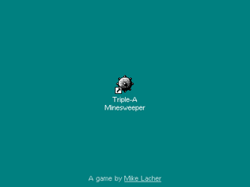
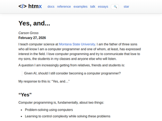
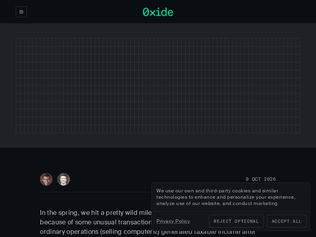
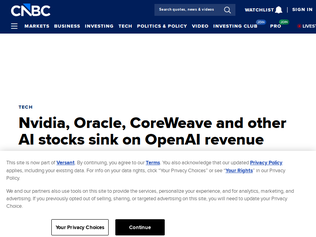
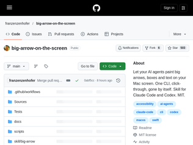

"> We will support the Deno runtime for another year with monthly releases containing bug fixes and security updates. After that year we will end our development of the Deno runtime. Deno will remain open source, and we welcome others who want to continue its development.So unless someone else picks up development, Deno will no longer be supported."
"I'm so bummed about this. Deno is by far my favourite JS runtime. I could sense this coming for a while now, but I was hopeful and just waiting to see what happened. Here we are. I'm glad I don't need to get off the runtime immediately. Sad we won't see any innovation like we did in the last 8 years or so.I hope workerd at least adopts Deno's security mechanisms so it functions as a better sandbox.One of my favourite projects of 2026 was a configurable LLM harness built around using deno as the runtime. The idea is that the configuration builds a state machine-driven program which is bundled into a binary that can only provide access to the I/O your code explicitly needs. I used it primarily to build interactive programs for colleagues which allow some LLM magic to occur without needing to worry about what they would do with Claude Desktop handling the same data or accessing the same machines and so on. It also allowed for testing local LLMs in deterministic patterns. How do they reason about what to do next when they can evaluate the possible states they can enter, based on the current context? It was really fun. Now I don't really know how I'd rebuild it, knowing I wouldn't use Deno. Maybe that's worth learning anyway."
"I loved early Deno and am sad to see it die. I invested heavily in the Deno ecosystem because of Ry’s initial vision for it.But I stopped because I saw this coming the moment they changed course and started putting npm compatibility as a priority. Deno’s surface area went from beautifully simple to very bloated. I think they felt the pressure of VC funding and just gave up on rebuilding Node from first principles.The silver lining is that early Deno was so good that Node copied some of its features. So at least we have a better Node now."
"At a past firm I managed a team of SREs.This was very much a "fire drill all the time" kind of place (vs "slow and steady"). The team came to me and said:"Alex, we keep getting bombarded by meeting requests and have no focus time."My solution was to create a weekly "team meeting" from 8am to 11am every Friday and invite all of them to it.They loved it!I mentioned to them that making a meeting like this was something they could have done themselves but they responded:"It carries more weight coming from you. Plus, if someone tries to schedule over it, they are more likely to think twice and/or I can say 'Hey, you have to talk to Alex.' ""
"This has real demand, I ended up in the Gitlab secondary youtube channel one day, ordering by most views, and I found a video [0] of a seemingly normal uninteresting meeting with millions of views. Turns out people were using this as an excuse for looking like they were busy. They disabled comments now but I saved some of them because I thought it was hilarious:I play this when I need my family to leave me alone - so helpful 4.5K I play this when I pretend to be busy. This meeting is literally about anything you want it to be about lol 1.5K I love that we all arrived at this video for the same reason 2.6K Every now and then I'll pause it at a good point in between them talking to make my own voice heard contributing to the "meeting" lol. Gets the full effect in! And the beautiful thing is their conversation just flows with it like they heard me lol. 562[0] https://www.youtube.com/watch?v=lBVtvOpU80Q"
"There's no one talking over another, each audio clip plays only, and immediately after one stops. The voice clarity is also too clear as most synthetic voices are for the obvious reason of being understood. Never sounding organic. Does this fool my toddler? Maybe."

"I absolutely love the fact that it's impossible to lose. You can click every mine and still not lose."
"So good.Maybe lean into some of the metal gear solid dialogue by having a long back and forth about "What's a mine?" "What do you mean 'mark a mine'?" "How do I know when I'm done?" etc."
"Amazing. Sat there for about five minutes listening to the dialogue, wasn't until I started hearing repeats that I realized it was actually interactive and not just an unnecessarily long opening cutscene.Incidentally, as of Windows 8, Microsoft replaced OG Minesweeper with an overdesigned mobile game-inspired app with daily challenges and in-game purchases[1].I've been carrying the orignal versions of Minesweeper and Solitaire from (checks Properties) Windows NT 3.51 in my "random bin" directory for years, chosen, I believe, because they're 32-bit, have none of the graphical changes introduced in later versions, and don't rely on any non-core system DLLs. They still run fine under Windows 11, though you have to jump through hoops to open their help files (namely, dig up a copy of winhlp32.exe and open them from within it, because modern Windows versions block the ability to add file associations for .hlp files, instead redirecting to a series of progressively less useful web sites).[1] https://apps.microsoft.com/detail/9wzdncrfhwcn?hl=en-US&gl=U..."

"I spent a long time honing my trade and I did learn a lot in the process, so I want to believe this argument, I really do. But then I imagine it applied to a lot of pre-industrial era jobs and I am not so sure."Master, should I still learn to weave our beautiful Persian rugs by hand?""Yes, and... Have you seen one of these mass-produced rugs? They all look the same and their quality is terrible! And how would you ever operate one of those new machines if you don't know a good rug from a bad one? By learning to weave manually, you are also learning about choosing the right yarn, negotiating the right prices with the merchant down at the market, selecting a good apprentice to pass down the trade. All these things will always be useful!"Yes, there are still artisans making and selling beautiful rugs at premium prices. But most people now are content with resting their feet on a cheap Ikea thing that they can replace every few years, so that market has shrunk to almost nothing."
"Hello all, I wrote this article to help students considering CS as a major.My own son has just started university studying CS, so I have skin in this game.I continue to believe in what I've said in this article despite being startled (like most people) by the advances in AI recently.One thing that I have noticed since writing this article is that the most effective vibe coders are already excellent developers, which I think is in keeping with the themes I discuss here. While I do expect the amount of hand-written code to decline, I think that knowing how code (and technical systems) work is going to continue to be valuable and perhaps even more valuable. I have no crystal ball, but that's what I'm seeing right now."
"> Is Coding → Prompting like Assembly → High Level Coding? […] I do not agree with this simile. Compilers are, for the most part, deterministic in a way that current AI tools are not.It’s not quite about the determinism. It’s about being able to reason about the relationship between source code and compiled program with formal precision. You can predict which changes in the source code will lead to which exact changes in the behavior of the compiled program. The same isn’t the case about changes to an LLM prompt and the LLM’s output.You could make an AI deterministic by fixing its source of randomness. That still wouldn’t allow you to reason about how its output will change when (for example) you add or remove a word in the prompt. The only way to find out is to run the LLM (= have the prompt run through the model and observe what comes out).That is the fundamental difference. Changes to source code have predictable and reason-able outcomes. You generally don’t have to compile the code and test it to know how precisely the change will affect the behavior of the compiled program according to the semantics of the programming language. That’s the case even if the compiler uses some probabilistic heuristics for trade-offs in code generation, and hence isn’t deterministic on the machine code level.To repeat, the difference is how you can reason about a compiler’s behavior versus an LLM’s behavior. Programming languages are designed such that you can reason about it. With LLMs it’s always an experiment."

"Sounds like a great company raising money for the right reasons.Oxide continues to be one of the most inspiring companies in the space, I was just encouraging someone to apply there yesterday. :)"
"Love the photo caption "FIGURE 1. US BEING AS EXCITED AS YOU CAN BE PAYING TAXES".Oxide are so good at comms."
"How is oxide trendy and IBM systems z/i are seen as archaic? Isnt that essentially what they sell “cloud” on prem? Seriously wondering what are the major differences in market, is it just that Oxide is targeting modern software stacks?"
"Flock and ALPR usage is solved in USA if every state adopts New Hampshire's law:* Illegal to collect every plate for later analysis* Must delete "non hit" plate images within 3 minutes* Strict forbidden to upload "non hit" camera imagery off the deviceI would add that it should also require a warrant to access the ALPR data, but it's a great start.https://gc.nh.gov/rsa/html/XXI/261/261-75-b.htm?utm_source=c..."
"I can see some nuance to this one. Flock is intended to be searchable by law enforcement, not Joe Average. Tracking cops and then publishing that information is not exactly the same as turning Flock back on the Flockers.I think the best solution is to just say nobody can do this, including the government. Or that if we allow things like Flock to exist, then we'd need actual legislation that tightens considerably how available the data is to be searched, and what approvals are necessary to access it.The obvious next step, otherwise, is for someone to start OpenALPRMap and we all get to suffer together."
"Why is nothing being done about this? This is 1984 we were laughing about. USA laughed at China when they did the same, but when USA is doing the same people are not outraged shooting those down, painting over them. Am I missing something?"
"Given the fact that signatories to the Rome Statute outnumber countries that aren’t, I’m not quite sure who the rogue is here…"
"You would think google, microsoft and apple would be having kittens over this. How will any government or large corporation trust their goods and services if they can be disabled at will because the USA government takes offence to you, or someone in your department. Good for linux I guess but pain for the rest of us."
"Related ongoing thread:Nobel Peace Prize for 2026 to Navanethem Pillay - https://news.ycombinator.com/item?id=50018420 - Oct 2026 (163 comments)"
"I was just checking which were the top guesses on polymarket before the announcement and this winner was not even a choice on there. At least we know there's no insider trading at the Nobel foundation."
"Related ongoing thread:US imposes sanctions on ICC hours after former judge wins Nobel Peace Prize - https://news.ycombinator.com/item?id=50021066 - Oct 2026 (288 comments)"
"Great to see that they're not afraid to stand up to the rising authoritarianism"

"This is an interesting shift compared to the past where OpenAI would’ve been public a long time ago (due to various regulations) so we would have much more direct insight.Right now we have a ~$1 trillion company which a ton of the “economy” and valuations are based on, with near zero information on how it’s doing."
"Gift link: https://giftarticle.ft.com/giftarticle/actions/redeem/f77156...Apparently they overstated revenue in an attempt to try to provide a direct comparison with Anthropic's reported metrics.From the article: "According to a person with knowledge of the matter, the discrepancy arose from attempts by OpenAI’s own investors to produce a direct comparison with Anthropic’s annualised revenues. The pair calculate the figure in different ways, with Anthropic including the revenue from sales via cloud partners such as AWS and Google Cloud, while OpenAI does not. Efforts to “gross up” OpenAI’s annualised revenue led to reports that the group’s annualised revenue had hit $40bn in August. The company has since told investors its revenues have grown more than 70 per cent, leading to the $70bn figure"**sorry the gift link can only be viewed 3 times.."
"What’s it called when you misstate revenue while also taking money from investors?"

"Man, just when it seemed like we had it all. Computers were cheap, efficient and powerful. Somehow we figured out a way to accomplish tasks we already had solved except now it's 1000x more expensive, requires the combined electricity of the entire world, is reliant on someone else's rented compute, and now I need a robot to tell me what button to press. What a time to be alive."
"I tried to read the "Does it need Screen Recording or Accessibility?" part, but it's slopped to the point I have no clue what it's trying to say. But if it can draw on top of permission prompts, what's stopping it from drawing box that hides the "decline" button and changing the "approve" button copy?"
""It is an arrow, so we spent an unreasonable amount of time on how it looks."Brilliant. This is exactly the kind of content I seek when I visit Hacker News.Truly art."
Cloudflare acquires Deno
"> We will support the Deno runtime for another year with monthly releases containing bug fixes and security updates. After that year we will end our development of the Deno runtime. Deno will remain open source, and we welcome others who want to continue its development.So unless someone else picks up development, Deno will no longer be supported."
"I'm so bummed about this. Deno is by far my favourite JS runtime. I could sense this coming for a while now, but I was hopeful and just waiting to see what happened. Here we are. I'm glad I don't need to get off the runtime immediately. Sad we won't see any innovation like we did in the last 8 years or so.I hope workerd at least adopts Deno's security mechanisms so it functions as a better sandbox.One of my favourite projects of 2026 was a configurable LLM harness built around using deno as the runtime. The idea is that the configuration builds a state machine-driven program which is bundled into a binary that can only provide access to the I/O your code explicitly needs. I used it primarily to build interactive programs for colleagues which allow some LLM magic to occur without needing to worry about what they would do with Claude Desktop handling the same data or accessing the same machines and so on. It also allowed for testing local LLMs in deterministic patterns. How do they reason about what to do next when they can evaluate the possible states they can enter, based on the current context? It was really fun. Now I don't really know how I'd rebuild it, knowing I wouldn't use Deno. Maybe that's worth learning anyway."
"I loved early Deno and am sad to see it die. I invested heavily in the Deno ecosystem because of Ry’s initial vision for it.But I stopped because I saw this coming the moment they changed course and started putting npm compatibility as a priority. Deno’s surface area went from beautifully simple to very bloated. I think they felt the pressure of VC funding and just gave up on rebuilding Node from first principles.The silver lining is that early Deno was so good that Node copied some of its features. So at least we have a better Node now."